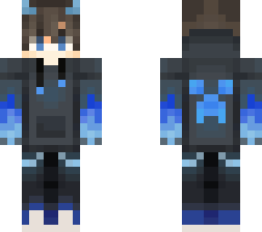

In case you have been living under all of the rocks of the earth, Minecraft is a survival/sandbox game originally developed by Mojang. Its main feature is the virtually infinite world generation.
Unfortunately, the game was bought by Microsoft Corporation.
You can read about why I absolutely despise them here.
My History with Minecraft
I first started playing Minecraft around 2012-2014 after playing the really shitty demo version that was provided at the time. Unlike most kids my age at that time, I never did pirate the game and I actually bought it.
At school, we used to fuck with each other on our shitty Windows 7 school computers. It got so bad one time a fight almost broke out. Wonderful times!
When I got home, I frequented the Annoying Orange Orangecraft Server where I had the shitty basic hoodie skin off of Skindex.

This skin was most likely not the one I used, but it is very similar.
If you didn't know what the Orangecraft server was before, you're very lucky. It has been shut down since I played last. If you're curious, here is a video of Midget Apple playing it. Be warned, this video is incredibly annoying (shocker).
Current Minecraft Endeavours
Currently, I play modded Minecraft on an SMP with my friends. The SMP is a very Create Mod centric server. Another mod we use is called Figura which allows you to create very complicated playermodels using a program called BlockBench and Lua.
One of my friends, jodieblend has a page where she describes her own Figura avatar. Check it out here!
This is a video presentation of my Figura avatar.
As for the SMP and my creations on it, the server is currently offline but I will provide screenshots when I am able to.